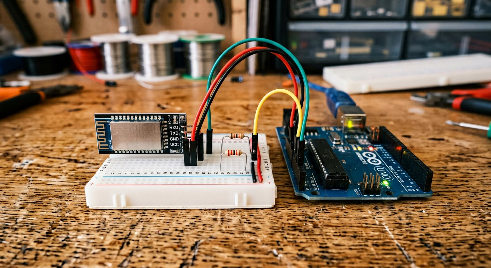

Qué cubre esta guía
- Qué es el HC-05 y cómo funciona
- HC-05 vs HC-06 vs módulos BLE: cuál elegir
- Lista de materiales y costos de referencia
- Conexión de hardware: divisor de voltaje y SoftwareSerial
- Modo de comandos AT: nombre, PIN y velocidad
- Código Arduino: control básico de un LED por Bluetooth
- Código Arduino: múltiples salidas y control PWM
- Apps para controlar tu Arduino desde el celular
- Comunicación entre dos Arduino sin cables
- Alcance real, potencia de transmisión y normativa en Chile
- Problemas comunes y solución de errores
- Seguridad del Bluetooth clásico y upgrade a BLE
- Preguntas frecuentes
Qué es el HC-05 y cómo funciona
El HC-05 es un módulo Bluetooth basado en el chip CSR BC417143, que implementa Bluetooth v2.0+EDR con el perfil SPP (Serial Port Profile). En términos prácticos, esto significa que el módulo actúa como un puente transparente entre una conexión serie UART tradicional (los pines TX/RX que ya conoces de Arduino) y un enlace Bluetooth inalámbrico: todo lo que envíes por el puerto serie hacia el HC-05 sale por Bluetooth hacia el dispositivo emparejado, y todo lo que ese dispositivo envíe llega de vuelta como datos serie normales.
Esta simplicidad es la razón por la que el HC-05 es uno de los módulos de comunicación inalámbrica más usados en proyectos con Arduino: no requiere aprender un protocolo Bluetooth complejo desde el microcontrolador, porque desde el punto de vista del código de Arduino, controlar algo por Bluetooth es exactamente igual que controlarlo por el puerto serie del cable USB.
El módulo opera en dos modos claramente diferenciados:
- Modo de datos (Data Mode): el modo por defecto tras el emparejamiento, donde el módulo transmite de forma transparente cualquier byte que reciba por UART hacia el dispositivo Bluetooth conectado, y viceversa.
- Modo de comandos AT (AT Command Mode): un modo de configuración donde el módulo, en vez de transmitir datos, interpreta comandos de texto que permiten cambiar su nombre visible, PIN de emparejamiento, velocidad de comunicación (baud rate) y rol (maestro o esclavo).
El módulo puede operar como esclavo (recibe conexiones entrantes, el caso típico para controlar Arduino desde un celular) o como maestro (inicia una conexión hacia otro dispositivo Bluetooth), lo que lo distingue de módulos más simples y habilita escenarios como la comunicación inalámbrica entre dos placas Arduino sin intervención de un teléfono, como se detalla más adelante en esta guía.
HC-05 vs HC-06 vs módulos BLE: cuál elegir
Antes de comprar, vale la pena entender dónde encaja el HC-05 frente a sus alternativas más comunes en el mercado de módulos económicos para hobby:
| Característica | HC-05 | HC-06 | BLE (HM-10 / ESP32) |
|---|---|---|---|
| Roles soportados | Maestro y esclavo | Solo esclavo | Periférico y central, según módulo |
| Perfil Bluetooth | SPP (Bluetooth clásico) | SPP (Bluetooth clásico) | GATT (Bluetooth Low Energy) |
| Compatibilidad con iPhone/iOS | No, para apps de terceros | No, para apps de terceros | Sí |
| Consumo de energía | Medio (Clase 2, ~2.5mW) | Medio (Clase 2, similar) | Bajo, ideal para batería |
| Complejidad de configuración | Media — comandos AT completos | Baja — comandos AT limitados | Media-alta — conceptos de servicios/características |
| Ideal para | Control desde Android, enlaces entre dos Arduino | Proyecto simple de un solo sentido esclavo | Apps móviles multiplataforma, proyectos a batería |
Para la mayoría de los proyectos de hobby orientados a control remoto simple desde un celular Android, el HC-05 es la mejor relación entre costo, simplicidad y flexibilidad, y es el módulo sobre el que se construye el resto de esta guía.
Lista de materiales y costos de referencia
| Componente | Especificación sugerida | Precio aprox. (CLP) |
|---|---|---|
| Arduino Uno o Nano | Original o compatible con ATmega328P | $6.000 – $15.000 |
| Módulo HC-05 | Breakout con regulador integrado a 3.3V | $3.000 – $6.000 |
| Resistencias para divisor | 1 kΩ y 2 kΩ, 1/4 W | $100 – $300 (par) |
| LED + resistencia limitadora | LED 5mm y resistencia 220-330 Ω | $200 – $500 |
| Módulo relé de 5V | 1 canal, optoacoplado | $1.500 – $3.500 |
| Protoboard y jumpers | Set básico macho-macho y macho-hembra | $2.000 – $5.000 |
| Smartphone Android | Con Bluetooth 2.0 o superior, cualquier gama | Ya disponible |
| Total aproximado del proyecto | $13.000 – $30.000 |
Es uno de los proyectos de comunicación inalámbrica más económicos que puedes armar con Arduino: si ya tienes la placa de otro proyecto, el resto de los componentes cuesta menos que una salida a comer.
Conexión de hardware: divisor de voltaje y SoftwareSerial
La mayoría de los breakouts de HC-05 disponibles comercialmente incluyen un regulador de voltaje integrado (típicamente un AMS1117 a 3.3V), lo que permite alimentar el pin VCC directamente con los 5V de Arduino sin problema. El detalle crítico está en los pines de datos: TXD y RXD del módulo trabajan a nivel lógico de 3.3V, no de 5V.
- HC-05 TXD → Arduino RX: conexión directa. Una señal de 3.3V suele ser interpretada correctamente como nivel alto por un pin digital de Arduino (cuyo umbral típico ronda los 3V a 5V de alimentación), por lo que en la práctica funciona sin divisor adicional en este sentido.
- Arduino TX → HC-05 RXD: aquí sí se necesita un divisor de voltaje resistivo. El pin TX de Arduino entrega una señal completa de 5V, por encima del límite que el pin RXD del HC-05 está diseñado para tolerar de forma sostenida. Un divisor simple con R1 = 1kΩ (entre TX y el nodo intermedio) y R2 = 2kΩ (entre el nodo intermedio y GND) entrega aproximadamente 3.33V al RXD del módulo, dentro de un rango seguro.
Otra decisión importante de hardware es no usar los pines 0 y 1 (RX/TX por hardware) de Arduino Uno o Nano para el HC-05, ya que esos mismos pines se comparten con el chip USB-serial usado para cargar programas desde el computador. Conectar el HC-05 permanentemente ahí genera conflictos al subir código y hace más difícil depurar por el monitor serie mientras el módulo está conectado. La solución estándar es usar la librería SoftwareSerial, que emula un puerto serie adicional en cualquier par de pines digitales, típicamente los pines 2 y 3.
Esquema conceptual de conexión:
Arduino 5V -----------------------------> HC-05 VCC
Arduino GND -----------------------------> HC-05 GND
Arduino pin 2 (RX SoftwareSerial) <------- HC-05 TXD (conexión directa)
Arduino pin 3 (TX SoftwareSerial) --[R1 1kΩ]--+--[R2 2kΩ]--> GND
|
+----------> HC-05 RXD
(divisor entrega ~3.3V)Modo de comandos AT: nombre, PIN y velocidad
Antes de programar el control por Bluetooth, es muy recomendable configurar el módulo mediante comandos AT — especialmente cambiar el PIN por defecto y darle un nombre identificable, en vez de dejarlo con la configuración de fábrica que comparten miles de módulos idénticos.
Para entrar en modo AT en la mayoría de los clones con firmware "Linvor" (los más comunes en tiendas), el procedimiento estándar es:
- Desconecta la alimentación del módulo.
- Mantén presionado el botón pequeño sobre el módulo (si tu breakout lo incluye).
- Mientras lo mantienes presionado, conecta la alimentación (VCC y GND).
- Suelta el botón después de 1-2 segundos. El LED debería comenzar a parpadear lentamente, aproximadamente una vez cada dos segundos — esa es la señal de que el módulo está en modo AT.
- Conecta el HC-05 a Arduino y sube un sketch "puente" simple que reenvíe caracteres entre el Monitor Serie y el SoftwareSerial conectado al módulo.
AT, prueba primero a 38400 y luego a 9600 antes de asumir que el módulo está dañado.// Sketch "puente" para enviar comandos AT desde el Monitor Serie
#include <SoftwareSerial.h>
SoftwareSerial BT(2, 3); // RX, TX
void setup() {
Serial.begin(9600);
BT.begin(38400); // probar 38400 primero; si no responde, usar 9600
Serial.println("Puente AT listo. Escribe comandos y presiona Enter.");
}
void loop() {
if (BT.available()) Serial.write(BT.read());
if (Serial.available()) BT.write(Serial.read());
}Con este sketch cargado, abre el Monitor Serie, configura la terminación de línea en "Ambos NL y CR" y escribe los comandos de la siguiente tabla:
| Comando | Función | Ejemplo de respuesta |
|---|---|---|
| AT | Verifica que el módulo responde | OK |
| AT+VERSION? | Consulta la versión de firmware | +VERSION:2.0-20100601 |
| AT+NAME=MiArduino | Cambia el nombre visible al emparejar | OK |
| AT+PSWD=1234 | Cambia el PIN de emparejamiento | OK |
| AT+UART=9600,0,0 | Configura baud rate, bit de parada y paridad para modo dato | OK |
| AT+ROLE=0 | Configura el módulo como esclavo | OK |
| AT+ROLE=1 | Configura el módulo como maestro | OK |
| AT+ADDR? | Consulta la dirección MAC del módulo | +ADDR:xxxx,xx,xxxxxx |
| AT+RMAAD | Elimina todos los dispositivos emparejados | OK |
Código Arduino: control básico de un LED por Bluetooth
Una vez configurado el módulo y verificado el hardware, el siguiente paso es un ejemplo mínimo: encender y apagar un LED enviando los caracteres 1 y 0 desde una app de terminal Bluetooth en el celular.
#include <SoftwareSerial.h>
SoftwareSerial BT(2, 3); // RX, TX (Arduino) conectados a TXD, RXD del HC-05
const int PIN_LED = 13;
void setup() {
pinMode(PIN_LED, OUTPUT);
Serial.begin(9600);
BT.begin(9600); // debe coincidir con AT+UART configurado en el modulo
Serial.println("Bluetooth listo. Esperando comandos...");
}
void loop() {
if (BT.available()) {
char comando = BT.read();
Serial.print("Comando recibido: ");
Serial.println(comando);
switch (comando) {
case '1':
digitalWrite(PIN_LED, HIGH);
BT.println("LED encendido");
break;
case '0':
digitalWrite(PIN_LED, LOW);
BT.println("LED apagado");
break;
default:
BT.println("Comando no reconocido");
break;
}
}
}Este ejemplo, aunque simple, contiene el patrón que reutilizarás en prácticamente cualquier proyecto de control por Bluetooth: leer un byte disponible en el SoftwareSerial, interpretarlo, y responder con una confirmación de texto — algo muy útil para depurar durante el desarrollo, aunque puedas quitarlo después para reducir tráfico innecesario.
Código Arduino: múltiples salidas y control PWM
El siguiente ejemplo escala el concepto anterior a un protocolo de comandos de texto más flexible, capaz de controlar el brillo de un LED por PWM y activar/desactivar un relé, todo desde comandos legibles enviados como línea de texto terminada en salto de línea.
#include <SoftwareSerial.h>
SoftwareSerial BT(2, 3);
const int PIN_LED_PWM = 9; // salida PWM, controla brillo
const int PIN_RELE = 7; // salida digital, controla rele
String buffer = "";
void setup() {
pinMode(PIN_LED_PWM, OUTPUT);
pinMode(PIN_RELE, OUTPUT);
Serial.begin(9600);
BT.begin(9600);
Serial.println("Sistema listo. Comandos: Lxx (brillo 0-100), RELE_ON, RELE_OFF");
}
void loop() {
while (BT.available()) {
char c = BT.read();
if (c == '\n') {
procesarComando(buffer);
buffer = "";
} else if (c != '\r') {
buffer += c;
}
}
}
void procesarComando(String cmd) {
cmd.trim();
if (cmd.startsWith("L")) {
int valor = cmd.substring(1).toInt(); // ej: "L75" -> 75
valor = constrain(valor, 0, 100);
analogWrite(PIN_LED_PWM, map(valor, 0, 100, 0, 255));
BT.print("LED al "); BT.print(valor); BT.println("%");
} else if (cmd == "RELE_ON") {
digitalWrite(PIN_RELE, HIGH);
BT.println("Rele activado");
} else if (cmd == "RELE_OFF") {
digitalWrite(PIN_RELE, LOW);
BT.println("Rele desactivado");
} else {
BT.print("Comando desconocido: ");
BT.println(cmd);
}
}Para que este código funcione correctamente, la app que uses en el celular debe enviar cada comando terminado en salto de línea (\n) — la mayoría de las apps de terminal Bluetooth para Android incluyen una opción de configuración para el "line ending" del texto enviado, que debe activarse antes de probar.
Apps para controlar tu Arduino desde el celular
Para las primeras pruebas, no necesitas programar tu propia app. La opción más práctica y usada en la comunidad es Serial Bluetooth Terminal (de Kai Morich), disponible gratis en Google Play: permite emparejar con el HC-05, enviar comandos de texto libre, y guardar botones predefinidos con macros para comandos que uses con frecuencia — suficiente para probar ambos códigos de esta guía sin escribir una sola línea de app.
Cuando quieras ir más allá del terminal genérico y construir una interfaz con botones propios, sliders para controlar el PWM o indicadores visuales, MIT App Inventor es el camino más accesible sin experiencia previa en desarrollo Android: ofrece un componente "Bluetooth Client" que se conecta al HC-05 por su nombre o dirección MAC, y bloques visuales simples para enviar texto cada vez que se presiona un botón — exactamente el tipo de comando de texto que procesan los ejemplos de código de esta guía.
Comunicación entre dos Arduino sin cables
Una de las capacidades distintivas del HC-05 frente al HC-06 es que puede operar en modo maestro, lo que permite enlazar dos módulos HC-05 entre sí y crear, en la práctica, un cable serial invisible entre dos Arduino separados por unos metros — útil para robots con una unidad de control remoto, estaciones de sensores remotas, o cualquier proyecto donde quieras evitar un cable físico entre dos placas.
El proceso general, resumido a alto nivel, es el siguiente:
- Configura un módulo como esclavo con
AT+ROLE=0(el que quedará conectado al Arduino "remoto"). - Anota su dirección MAC con
AT+ADDR?en el módulo esclavo. - Configura el segundo módulo como maestro con
AT+ROLE=1. - En el módulo maestro, fija el modo de conexión fija con
AT+CMODE=0y enlázalo a la dirección del esclavo conAT+BIND=<direccion_mac_del_esclavo>(reemplazando los separadores según la sintaxis del firmware, típicamente cambiando los dos puntos por comas). - Al reiniciar ambos módulos fuera de modo AT, el maestro intentará conectarse automáticamente al esclavo vinculado, estableciendo el puente serial sin ninguna intervención manual de emparejamiento cada vez que se enciendan.
Una vez establecido este enlace, ambos Arduino pueden comunicarse exactamente igual que si estuvieran conectados por un cable serial físico: todo lo que uno envíe por su SoftwareSerial llega al otro, sin necesidad de ningún celular de por medio.
Alcance real, potencia de transmisión y normativa en Chile
El HC-05 estándar es un dispositivo Bluetooth Clase 2, con una potencia de transmisión de aproximadamente 4 dBm (2.5 mW). Esto se traduce en un alcance teórico de hasta 10 metros en condiciones ideales de línea de vista directa. En un entorno doméstico real, con paredes, muebles y la interferencia habitual de routers WiFi operando en la misma banda de 2.4 GHz, es razonable esperar un alcance útil de entre 3 y 6 metros antes de que la conexión se vuelva inestable.
Respecto a la normativa chilena: los dispositivos que transmiten en la banda ISM de 2.4 GHz sin licencia (WiFi, Bluetooth, Zigbee) operan bajo el marco regulatorio de la Subsecretaría de Telecomunicaciones (SUBTEL), que en general permite el uso de equipos de baja potencia en esta banda sin necesidad de licencia individual para uso personal. Los módulos HC-05 comercializados normalmente ya cuentan con certificaciones internacionales (FCC, CE) incorporadas en su diseño de fábrica. Para un proyecto de hobby, uso personal o educativo, esto no representa una barrera práctica.
Problemas comunes y solución de errores
| Síntoma | Causa probable | Solución |
|---|---|---|
| No aparece en la lista de Bluetooth del celular | Alimentación incorrecta o GND no compartido con Arduino | Verificar que el LED parpadee, revisar continuidad de GND común |
| Se empareja pero no llegan datos correctos | Baud rate de BT.begin() no coincide con el configurado en el módulo | Confirmar velocidad real con AT+UART? en modo AT |
| Módulo deja de responder o se calienta | Exposición sostenida a 5V en el pin RXD sin divisor de voltaje | Agregar divisor resistivo, reemplazar módulo si el daño ya ocurrió |
| No logro entrar en modo AT | Secuencia de botón/energizado incorrecta para tu variante de firmware | Probar mantener el botón antes y después de energizar; probar 38400 y 9600 baudios |
| El sketch no se sube al Arduino con el módulo conectado | HC-05 conectado a los pines 0/1 (hardware serial), en conflicto con el USB | Usar SoftwareSerial en otros pines, o desconectar el módulo al subir código |
| Comandos AT devuelven caracteres ilegibles | Configuración de terminación de línea incorrecta en el Monitor Serie | Cambiar a "Ambos NL y CR" en el desplegable del Monitor Serie |
Seguridad del Bluetooth clásico y upgrade a BLE
Vale la pena ser honesto sobre las limitaciones de seguridad del enfoque descrito en esta guía. El emparejamiento por PIN del Bluetooth clásico SPP es un mecanismo básico, pensado originalmente para evitar conexiones accidentales, no para proteger contra un atacante con intención real. El PIN por defecto de fábrica (1234 o 0000) es de conocimiento público, y aunque lo cambies, el nivel de seguridad de este esquema es limitado comparado con protocolos modernos.
Para la mayoría de los proyectos de hobby — encender un LED, mover un servo, leer un sensor — este nivel de seguridad es perfectamente aceptable. Pero si tu proyecto controla algo con implicancias de seguridad física real, como abrir una puerta, activar un motor de potencia considerable o cortar energía a un circuito, es buena práctica agregar una capa adicional de validación en el propio código de Arduino: por ejemplo, exigir que cada comando crítico venga acompañado de una clave simple definida en el sketch, y rechazar cualquier comando que no la incluya, en vez de confiar únicamente en el PIN de emparejamiento del módulo.
Cuando las limitaciones del Bluetooth clásico —consumo de energía más alto, incompatibilidad con iOS, seguridad básica— se vuelven relevantes para tu proyecto, el camino de upgrade natural es Bluetooth Low Energy (BLE), ya sea con un módulo dedicado como el HM-10 o aprovechando el BLE integrado de un ESP32. BLE consume una fracción de la energía del Bluetooth clásico (ideal para proyectos a batería), es compatible con iOS y Android desde una misma app, y permite estructurar la comunicación en servicios y características (el modelo GATT) en vez de un simple flujo de texto — a cambio de una curva de aprendizaje algo más pronunciada que el modelo transparente del HC-05.
Conclusión
El HC-05 sigue siendo, años después de su lanzamiento, una de las puertas de entrada más accesibles a la comunicación inalámbrica con Arduino: un puñado de componentes económicos, un divisor de voltaje de menos de $300 pesos, y un puñado de comandos AT bien entendidos son suficientes para pasar de un proyecto controlado por cable USB a uno controlado a distancia desde el bolsillo. Su principal limitación —ser Bluetooth clásico y no BLE— se vuelve evidente sobre todo cuando el público objetivo usa iPhone o cuando la energía disponible es limitada, y en esos casos el camino de upgrade hacia BLE con HM-10 o ESP32 está claramente trazado. Para aprender el patrón fundamental de control remoto por comandos de texto sobre un enlace serie inalámbrico, sin embargo, es difícil encontrar un punto de partida más directo.
Preguntas frecuentes
¿Cuál es la diferencia entre el módulo HC-05 y el HC-06?
El HC-06 solo puede operar como esclavo Bluetooth: se conecta a un celular o computador, pero no puede iniciar conexión hacia otro módulo. El HC-05 soporta ambos roles, maestro y esclavo, lo que permite además del control desde celular, enlazar dos módulos HC-05 entre sí para crear un puente serial inalámbrico entre dos Arduino. El HC-05 también expone un set de comandos AT más completo para configurar nombre, PIN, velocidad y rol del módulo.
¿Puedo controlar mi Arduino con HC-05 desde un iPhone?
No de forma directa con apps genéricas de terminal Bluetooth. iOS no expone el perfil Bluetooth clásico SPP (Serial Port Profile) a aplicaciones de terceros por restricciones de la propia plataforma; CoreBluetooth, la API disponible para desarrolladores en iOS, solo trabaja con Bluetooth Low Energy (BLE). Para controlar un proyecto desde iPhone es necesario usar un módulo BLE como el HM-10, o un ESP32 con Bluetooth Low Energy, junto a una app compatible con ese protocolo.
¿Qué alcance real tiene el módulo HC-05?
El HC-05 estándar es un dispositivo Bluetooth Clase 2, con una potencia de transmisión aproximada de 4 dBm (2.5 mW), lo que da un alcance teórico de hasta 10 metros en línea de vista directa y sin obstáculos. En condiciones reales de interior, con paredes, muebles o interferencia de otros dispositivos en la banda de 2.4 GHz como routers WiFi, el alcance útil suele reducirse a entre 3 y 6 metros.
¿Es obligatorio usar un divisor de voltaje para conectar el HC-05 a Arduino?
Es muy recomendable y debe considerarse una buena práctica obligatoria. El pin RXD del HC-05 trabaja a nivel lógico de 3.3V y no está diseñado para tolerar de forma sostenida los 5V que entrega un pin TX de Arduino Uno o Nano. Muchos proyectos funcionan durante un tiempo sin el divisor, pero exponen el módulo a una degradación progresiva o a un daño directo. Un divisor resistivo simple de 1kΩ y 2kΩ en la línea Arduino TX hacia HC-05 RX resuelve el problema con un costo prácticamente nulo.
¿Cómo sé si mi módulo HC-05 está en modo de comandos AT o en modo de datos?
El LED integrado del módulo es el indicador más confiable. Un parpadeo rápido y constante generalmente indica que el módulo está en modo de datos, buscando o esperando una conexión Bluetooth. Un parpadeo lento, aproximadamente una vez cada dos segundos, indica que el módulo está en modo de comandos AT, listo para recibir configuración por el puerto serie. El patrón exacto puede variar levemente entre el firmware original y los clones más económicos disponibles en el mercado.
Este artículo es contenido editorial independiente: no contiene ubicaciones patrocinadas ni enlaces de afiliado. Si en futuras actualizaciones se agregan enlaces a proveedores de componentes, serán identificados explícitamente. El código y los comandos AT son referenciales y pueden variar levemente entre distintos fabricantes y versiones de firmware del módulo; verifica siempre el comportamiento con tu propio hardware. Si detectas un error técnico en esta guía, por favor avísanos.
Sigue aprendiendo
Si te interesó trabajar con temporización y comunicación serie en Arduino, nuestra guía Construye tu Propio Detector de Metales Casero con Arduino aplica un nivel similar de rigor técnico a otro proyecto de electrónica práctica — osciladores, medición de frecuencia y código de detección en tiempo real.
También puedes revisar el temario completo del blog para ver qué guías vienen en camino.
Fuentes primarias y lecturas recomendadas
Estas referencias sustentan los conceptos generales de la guía. Los comandos AT exactos y el comportamiento eléctrico deben verificarse de forma experimental con tu propio módulo, ya que existen variaciones entre fabricantes y versiones de firmware.
- Arduino Reference — Librería SoftwareSerial
- Components101 — Ficha técnica y comandos AT del módulo HC-05
- Subsecretaría de Telecomunicaciones (SUBTEL) de Chile — Normativa de equipos de radiocomunicación
Enlaces revisados: 14 de septiembre de 2026.